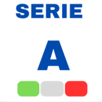

13/02/2026 ore 21:45
MULTIGOL OSPITE 2 4
MILAN VINCENTE
14/02/2026 ore 18:30
OVER 2.5
MULTIGOL CASA 2 4
15/02/2026 ore 12:30
MULTIGOL CASA 1 3
MULTIGOL 3 5
30/08/2025 ore 20:45
ROMA VINCENTE
MULTIGOL 2 - 4
31/08/2025 ore 18:30
JUVENTUS VINCENTE
MULTIGOL 2-4
31/08/2025 ore 18:30
MULTIGOL TORINO 1-2
MULTIGOL 2-4
31/08/2025 ore 20:45
INTER VINCENTE
MULTIGOL INTER 2 4